Articulation, dynamics, performance indications, and note-heads
+ Associated example files
Articulation, dynamics, slurs, and performance indications, as well as
note-head styles, for both CMN and LilyPond output, can be attached to
the musical data generated by slippery chicken in two
ways. The first method is to specify the desired marks using
the :marks keyword when defining
the rthm-seq-palette
within a call to
the make-slippery-chicken
function (see the page on rthm-seq-palettes
and rthm-seq-maps for more detail). This attaches the given marks
directly to the marks slot of the
corresponding rthm-seq
object. That is the method that will be introduced on this page.
The second method is to add the marks after
the slippery-chicken
object has been generated. That approach is covered on the page for
post-generation editing
techniques. Some marks, such as LilyPond trills, can only be added
using this second method.
+ Adding marks via :marks
Articulation, dynamics, and some performance indications can be
attached to
individual rhythm
objects by enclosing them within the definitions of
the rthm-seq
objects of
the rthm-seq-palette.
This is done using the :marks keyword followed by a
list. (Also see the page on
the rthm-seq object.) Of the
marks available, only the specific dynamic marks
(p, f etc.; not including crescendos etc.) will
affect MIDI output.
Assigning one rhythm object per mark
The :marks list indicates the mark to be added, such
as a for an accent or s for staccato,
followed by an index number (counting from 1) for the
specific rhythm object within the
given rthm-seq to which the mark is to be attached. (See
the tables of marks below for a full list of
available marks.) The indication (a 1 s 3), therefore,
adds an accent to the first rhythm item of
the rthm-seq and a staccato dot to the third. Separate
marks are included sequentially in the same list, separated only by a
space.
Marks that span multiple notes, such as crescendos, glissandos,
ottava brackets, or slurs, are indicated by specifying the starting
note and ending note of the span. In these cases, there is a separate
mark for the beginning of the span and the end of the span
(e.g. dim-beg and dim-end). Slurs and
phrase marks also have an additional, shorter form of notation, which
is described in the paragraph on slurs and phrases
below.
:marks (a 1 s 3 beg-sl 5 end-sl 6 dim-beg 9 dim-end 13)
Dynamics can be attached in the same way.
:marks (ppp 1 cresc-beg 2 cresc-end 4 fff 5)
It is important to note that marks are attached
to rhythm objects of the rthm-seq, and not
to items in the pitch-seq of
the pitch-seq-palette. Two tied rhythmic values are
counted as separate rhythm objects. This means that
marks can be attached to notes that are tied from the previous
note.
NB: When adding marks that require a beginning and ending
indication via the :marks slot, including
the beg-sl and end-sl version of slurs or
the beg-phrase and end-phrase version of
phrase markings, the user should always include both
the beg- and end- versions of the mark in
the same rthm-seq to avoid errors or unwanted artifacts
in the score. To add marks whose beginning and end points lie in
separate sequences,
use post-generation editing
methods instead.
Assigning multiple rhythm objects per mark
When two numbers follow a mark indication, the mark is attached to
all rhythm objects from the position in indicated by the
first number to the position indicated by the second. Thus
(a 1 4) attaches an accent to rhythm
objects 1, 2, 3 and 4 of the rthm-seq. When more than
two numbers follow the mark indication, the mark is only attached to
those specific rhythm objects. Thus
(s 5 7 8) attaches a staccato to rhythm
objects 5, 7, and 8.
:marks (a 1 4 s 5 7 8)
Slurs and phrase marks
Indications for slurs and phrase markings can be given in two
ways. The first way is to attach the beg-sl
and end-sl or beg-phrase
and end-phrase marks to the corresponding rhythms:
:marks (beg-sl 1 end-sl 2 beg-sl 5 end-sl 6 beg-phrase 1 end-phrase 8)
Alternatively, these two items can be added by using the
marks slur and phrase followed by the
starting and ending rhythm:
:marks (slur 1 2 slur 5 6 phrase 1 8)
User-defined text marks
User-defined performance indications can be added to any note by placing the desired text in quotation marks:
:marks ("etwas rascher" 1)
:marks vs. post-generation editing
Marks that are attached via the marks slot will appear
in the score whenever that rthm-seq occurs. For this
reason, the user may wish to add some marks, such as dynamics, by
using the post-generation editing
methods instead.
+ Changing note-heads via :marks
The marks slot can also be used to change the note
heads of one or more notes in a rthm-seq. This is done
using the same syntax as for the articulations, dynamics, and
performance indications.
:marks (x-head 1 triangle-up 5)
An entire passage can be changed to a different note-head by following the name of the note-head with two numbers indicating the first and last rhythm objects whose note-head are to be changed.
:marks (x-head 1 8)
Note-head marks can be interspersed with any other type of mark:
:marks (ppp 1 a 1 3 5 s 2 "like a whisper" 4 slur 6 7 x-head 3 8)
The types of note-heads available can be found in the tables of marks below. As with the other marks and dynamics, some note-head types are only available to CMN or LilyPond.
+ LilyPond arrows
LilyPond has an additional option for placing horizontal arrows
above a player's staff in the score. This is done in post-generation
editing using the add-arrow-to-events method.
The add-arrow-to-events method takes as its arguments
a slippery-chicken object, the text to be placed at the
beginning and end of the arrow (both as strings), followed by
references to the bars and notes where the arrow is to start and end,
and the player.
If no text is desired for either the start or end of the arrow, the
user must enter a single space as a string
(" "), rather than an empty string
(""). The bar and note references are each specified as
two-item lists, with the first item being the bar number and the
second item being the index of the note-event in the bar. (NB:
The note-event index counts both notes and rests and starts at
1.) The player must be specified exactly as it is defined in
the ensemble block.
(let* ((mini
(make-slippery-chicken
'+mini+
:ensemble '(((vn (violin :midi-channel 1))))
:set-palette '((1 ((c4 d4 e4 f4 g4 a4 b4 c5))))
:set-map '((1 (1 1 1)))
:rthm-seq-palette '((1 ((((4 4) - e e e e - - e e e e -))
:pitch-seq-palette ((1 2 3 4 5 6 7 8)))))
:rthm-seq-map '((1 ((vn (1 1 1))))))))
(add-arrow-to-events +mini+ "start" "end" '(1 5) '(3 4) 'vn )
(write-lp-data-for-all mini :base-path "/tmp/"))
| 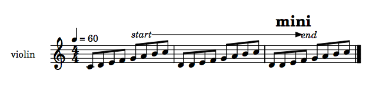 |
+ Arbitrary LilyPond Code
Any event can carry arbitrary Lilypond code in the form of a text
mark (string). Thus you can manipulate Lilypond directly without
looking to a slippery-chicken method to do this for
you. For example, if you wanted to change the number of staff lines in
a part you could use something like the following text mark; this would
make the given string appear in the Lilypond file before the note you
want to begin this feature with. (N.B. use the
:staff-lines slot of an instrument in your
instrument-palette if the instrument should
always use a specific number of staff lines).
(add-mark-before-note sc-object 7 1 'perc '(text "\\stopStaff \\override Staff.StaffSymbol.line-count = #3 \\startStaff"))
Some pre-made graphics files can be used as marks, as detailed in the next section, but in order to attach your own EPS graphics file as a mark to a note, try the following:
(let* ((mini
(make-slippery-chicken
'+mini+
:ensemble '(((fl (flute :midi-channel 1))))
:set-palette '((1 ((c4 d4 e4 f4 g4 a4 b4 c5))))
:set-map '((1 (1)))
:rthm-seq-palette '((1 ((((4 4) h. (q))
((q) h.)
((e) e (q) - e e e e -))
:pitch-seq-palette ((1 2 3 4 5 6 7)))))
:rthm-seq-map '((1 ((fl (1))))))))
(add-mark-to-note
mini 1 1 'fl
'(text "^\\markup {\\general-align #Y #DOWN ~
{\\epsfile #X #1.5 #\"blah.eps\"} }"))
(lp-display mini))
+ LilyPond marks that use graphics files
A number of marks available to LilyPond use specially designed
graphics files. In order to make use of these marks,
the :use-custom-markup argument of
the write-lp-data-for-all method must be set
to T.
The LilyPond graphics files required for these marks can be obtained
from the
other files page. The
individual .eps files in the downloaded archive must be
placed in the same directory as the .ly files that are
to be processed. Once this is done, using LilyPond to generate PDFs
of the given .ly file will result in the
corresponding .eps files being automatically inserted
into the score. If using lilypond on Linux, or
running lilypond from the command line on a Mac, the
user must also be sure to cd to the directory where
the .eps and .ly files are located before
running the program.
The LilyPond marks that currently require graphics are:
| aeolian-dark | |
| aeolian-light | |
| bracket-end | |
| mphonic-arr | 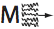 |
| mphonic-cluster | |
| mphonic-cons | |
| mphonic-diss | |
| sing | |
| sing-arr | 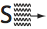 |
| arrow-up-down | 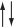 |
These can be used as follows:
(let* ((mini
(make-slippery-chicken
'+mini+
:ensemble '(((fl (flute :midi-channel 1))))
:set-palette '((1 ((c4 d4 e4 f4 g4 a4 b4 c5))))
:set-map '((1 (1)))
:rthm-seq-palette '((1 ((((4 4) h. (q))
((q) h.)
((e) e (q) - e e e e -))
:pitch-seq-palette ((1 2 3 4 5 6 7))
:marks (aeolian-dark 1 mphonic-arr 2
arrow-up-down 3
bracket-end 7))))
:rthm-seq-map '((1 ((fl (1))))))))
(write-lp-data-for-all mini :base-path "/tmp/" :use-custom-markup t))
| 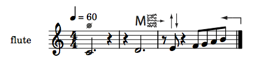 |
+ Fingerings
Due to the manner by which the :marks keyword argument
is parsed, fingerings can only be added using post-generation
editing. Numbers can be assigned to the marks slot
using the add-mark-to-note method, as seen here:
(add-mark-to-note mini 1 2 'vn 1) (add-mark-to-note mini 1 3 'vn 2)
Tables of marks
See also the robodoc documenation for lp-get-mark for all the latest marks.+ Articulation and performance indications
| mark | :mark | symbol |
|---|---|---|
| accent | a |
|
| accented staccato | as |
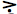 |
| accented tenuto | at |
|
| arco | arco |
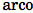 |
| bartok pizzicato (see note) | bartok |
|
| battuto abbrev. | batt |
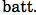 |
| col legno | col-legno |
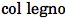 |
| col legno abbrev. | cl |
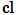 |
| col legno battuto abbrev. | clb |
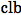 |
| col legno tratto abbrev. | clt |
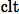 |
| crescendo begin | cresc-beg |
|
| crescendo end | cresc-end
| |
| diminuendo begin | dim-beg |
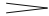 |
| diminuendo end | dim-end |
|
| fermata | pause |
|
| glissando begin (see note) | beg-gliss |
|
| glissando end (see note) | end-gliss |
|
| left-handed pizzicato | lhp |
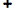 |
| molto vibrato | mv |
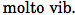 |
| natural harmonic | harm |
|
| open note | open |
|
| ordinario | ord |
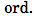 |
| ottava begin (see note) | beg-8va |
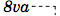 |
| ottava end | end-8va |
|
| ottava bassa begin (see note) | beg-8vb |
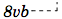 |
| ottava bassa end | end-8vb |
|
| double ottava begin (see note) | beg-15ma |
 |
| double ottava end | end-15ma |
|
| double ottava bassa begin (see note) | beg-15mb |
 |
| double ottava bassa end | end-15mb |
|
| phrase mark begin | beg-phrase |
|
| phrase mark end | end-phrase |
|
| pizzicato | pizz |
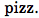 |
| pizzicato in parentheses | pizzp |
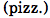 |
| poco crini | poco-crini |
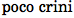 |
| senza vibrato | sv |
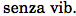 |
| short pause (see note) | short-pause |
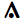 |
| slur begin | beg-sl |
|
| slur end | end-sl |
|
| staccato | s |
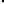 |
| string indications | I,II,III,IV |
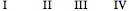 |
| sul ponticello abbrev. | sp |
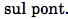 |
| sustain pedal down | ped |
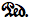 |
| sustain pedal change | ped^ |
|
| sustain pedal up | ped-up |
|
| tenuto | te |
|
| tenuto-staccato | ts |
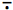 |
| tre corda (see note) | tc |
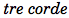 |
| tremolo (3 slashes through stem) | t3 |
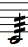 |
| una corda | uc |
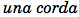 |
CMN-only articulation and performance indications
| mark | :mark | symbol |
|---|---|---|
| additional CMN string indications | I-II, I-II-III,
II-III, III-IV |
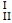 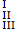 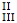 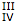 |
| fingernail | nail |
|
| stopped note | stopped |
|
| trill with flat accidental (see note) | trill-f |
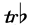 |
| trill with natural accidental (see note) | trill-n |
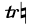 |
| trill with sharp accidental (see note) | trill-s |
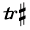 |
LilyPond-only articulation and performance indications
| mark | :mark | symbol |
|---|---|---|
| hairpin with circled tip for niente (see note) | hairpin0 |
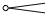 |
Notes on articulation and performance indications
- bartok pizzicato: To use
bartokwith LilyPond, you must set the:use-custom-markupkeyword toTwhen callingwrite-lp-data-for-all. - beg-gliss: Adding a gliss to a chord is not possible in CMN; try adding to a note in the chord instead.
- end-gliss: There is no separate command for ending a
glissando in LilyPond, as there is in CMN; however, place
the
end-glissanyway and slippery chicken will handle it internally. - beg-8va/end-8va, beg-8vb/end-8vb: When LilyPond encounters these marks it will automatically transpose the pitches in the score by an octave. CMN does not do this.
- short pause: There is no short pause in CMN, so it is replaced by a normal fermata.
- tre corda: The
tre cordamark in LilyPond requires that auna cordamark has already been previously placed. Attempting to add atre cordamark without first placing auna cordamark will result in a LilyPond error when rendering the score. This does not apply to CMN. - trills: Trills for LilyPond scores are best entered
using the post-generation editing method
trill. See the post-generation data editing page for more detail. - hairpin0: This mark must be used together with
indications for either a crescendo or diminuendo,
and the
hairpin0mark must be attached to the samerhythmobject to which thecresc-begordim-begis attached, regardless of whether the mark is to indicate a crescendo from 0 or diminuendo to 0; e.g.::marks (hairpin0 3 cresc-beg 3 cresc-end 5 dim-beg 6 dim-end 8 hairpin0 6)
+ Dynamics
| mark | :mark | symbol |
|---|---|---|
| pppp | pppp |
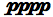 |
| ppp | ppp |
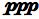 |
| pp | pp |
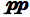 |
| p | p |
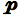 |
| mp | mp |
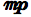 |
| mf | mf |
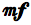 |
| f | f |
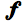 |
| ff | ff |
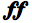 |
| fff | fff |
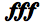 |
| ffff | ffff |
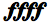 |
CMN-only dynamics
| mark | :mark | symbol |
|---|---|---|
| pppp in parentheses | pppp-p |
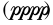 |
| ppp in parentheses | ppp-p |
|
| pp in parentheses | pp-p |
|
| p in parentheses | p-p |
|
| mp in parentheses | mp-p |
|
| mf in parentheses | mf-p |
|
| f in parentheses | f-p |
|
| ff in parentheses | ff-p |
|
| fff in parentheses | fff-p |
|
| ffff in parentheses | ffff-p |
+ Note-heads
| mark | :mark | symbol |
|---|---|---|
| circled x | circled-x |
|
| flageolet note-head (see note) | flag-head |
|
| upwards pointing triangle | triangle-up |
|
| x | x-head |
CMN-only note-heads
| mark | :mark | symbol |
|---|---|---|
| airy note-head | airy-head |
|
| downward-pointing arrow | arrow-down |
|
| upward-pointing arrow | arrow-up |
|
| slash | slash |
|
| square | square
| |
| no note-head | none |
LilyPond-only note-heads
| mark | :mark | symbol |
|---|---|---|
| triangle pointing right | triangle |
Notes on note-heads
- flag-head: LilyPond has the additional option of
specifying whether flageolet note-heads should also be given dots
or not for dotted rhythms. The dotted flageolet-head feature can be
enabled and disabled using the post-generation editing
method
add-mark-before-noteand adding the markflag-dots-onto the first event object of a passage where dots are to be added to flageolet note-heads, andflag-dots-offto the last event object of a passage where dots are to be added to flageolet note-heads. These two marks are not visible in the score:(add-mark-before-note mini 1 1 'vn 'flag-dots-on) (add-mark-before-note mini 7 1 'vn 'flag-dots-off)